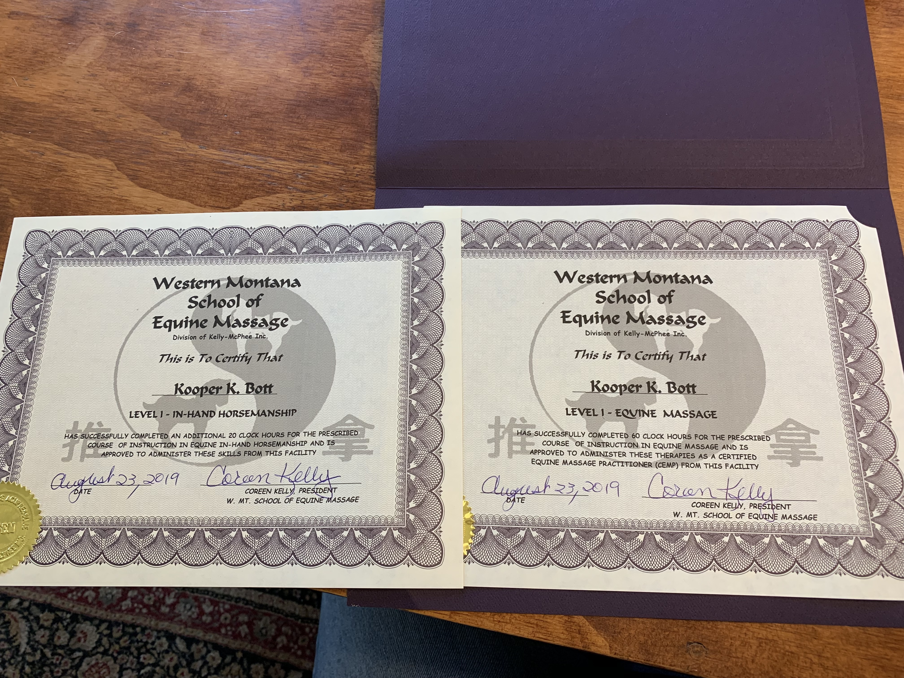

Kooper completed her masssage therapy training at the Western Montana School of Equine Massage in August of 2019,
where she graduated with top honors in her class. She has spent the last four years working on her own horses as well as many
client horses. Her passion to help her own horses is what prompted her to go to equine massage school. Seeing how much she could help
her own horses led her to open up her service to others. She is passionate about teaching others about their horses muscle
and joint health and hopes to contiune to help even more horses feel their best.

Kooper is a competative breakaway roper, traveling all over the country to rope calves. In breakaway roping thousandths
of a second can be the difference between first and last. She knows that when your horse feels its best is can stop harder and faster,
making your rope break a way faster, leading to faster times and more money.